Painel de Desenvolvimento & Acompanhamento de Progresso
Consulte aqui exatamente o que cada item faz no jogo, suas funções práticas, estatísticas, atributos térmicos e utilidade com o Flamefang.
Responsável pelos blocos funcionais, comidas, selaria, armaduras, ferramentas, GUIs, menus e lógica Java NeoForge.
D:\Mine\MEMORIA_AGENTE_ITENS.mdwingsofthewild-1.0.0.jar.
Responsável pelos modelos 3D Blockbench, esqueleto GeckoLib, animações fluidas e modelo 3D do ovo.
D:\Mine\MEMORIA_AGENTE_CRIATURAS.mdflamefang_{adult, Juvenil, hatchling, egg}_geckolib.bbmodelModEntities.java, classe FlamefangEntity.java com GeoEntity, atributos épicos (120 HP, 12 Dano, 8 Armadura, 0.6 Voo), modelo FlamefangModel.java, renderizador FlamefangRenderer.java e registro no mod principal WingsOfTheWild.java. Compilado e pronto no JAR!
Responsável pelo visual 2D dos itens que aparecem no inventário, blocos funcionais, interfaces de usuário (GUIs 256x256), texturas de armaduras corporais humanoides (EquipmentAsset 64x32) e refinamento pixel-art.
D:\Mine\MEMORIA_AGENTE_ARTE.mdResponsável pela auditoria estrita, validação de sintaxe JSON, definições de itens (MC 26.3), integridade de texturas PNG, localização I18N, aba criativa e empacotamento no JAR.
D:\Mine\MEMORIA_AGENTE_AUDITORIA.mdD:\Mine\audit_validator.py./gradlew build BUILD SUCCESSFUL (Jar de 308.075 bytes com 478 arquivos).
Responsável pelos modelos cúbicos 3D imersivos, arquivos Blockbench (.bbmodel), modelos JSON de bloco/item e mapeamento UV das estações de trabalho e blocos interativos.
D:\Mine\MEMORIA_AGENTE_ESTACOES.mdD:\Mine\modelslocks\*.bbmodel (7 arquivos com texturas base64 embutidas)src/main/resources/assets/wingsofthewild/models/block/*.json
Inspeção técnica automatizada de todos os 116 itens e blocos do mod Wings of the Wild (incluindo o novo sistema de definições assets/wingsofthewild/items/ do Minecraft 26.3).
| Dimensão Auditada | Escopo Avaliado | Critérios de Rigor | Status |
|---|---|---|---|
| 1. Registro Java NeoForge | ModBlocks.java & ModItems.java |
IDs únicos, DeferredRegister, food properties, armor/tool materials, dureza e luz. | 116 / 116 Aprovados (100%) |
| 2. Sintaxe & Modelos JSON | blockstates/, models/block/, models/item/ |
JSON válido, referências a parents válidos (cube, cube_all, generated, handheld). | 170 / 170 Aprovados (100%) |
| 3. Definições de Item JSON (MC 26.3) | assets/wingsofthewild/items/ |
Mapeamento minecraft:model para o modelo de item correspondente (corrige texturas no inventário). |
116 / 116 Aprovados (100%) |
| 4. Texturas 2D PNG | textures/block/, textures/item/ |
Validadas via Pillow: formato PNG autêntico, 16x16 pixels, canal alfa RGBA sem perdas. | 145+ Texturas Aprovadas |
| 5. Localização Bilíngue (I18N) | lang/en_us.json & lang/pt_br.json |
Chaves block.* e item.* completas, sem strings vazias ou desbalanceadas. |
232 / 232 Chaves Aprovadas |
| 6. Aba Criativa Oficial | ModCreativeTabs.java |
Chamada explícita output.accept(...) para todos os itens e blocos do mod. |
116 / 116 Aprovados (100%) |
| 7. Empacotamento JAR | wingsofthewild-1.0.0.jar |
Inspeção física do arquivo ZIP: 478 arquivos compactados incluindo classes, assets, items e lang. | 478 Arquivos Integrados |
Todos os 116 itens e blocos do mod Wings of the Wild (incluindo o novo sistema de definição em assets/wingsofthewild/items/ para correção de texturas no inventário do Minecraft 26.3 NeoForge) cumprem com 100% de rigor técnico as normas da engine. O mod compila limpo sem advertências e sem texturas roxas/pretas no inventário.
📄 Relatório completo detalhado disponível em: D:\Mine\MEMORIA_AGENTE_AUDITORIA.md | Scripts: D:\Mine\audit_validator.py e D:\Mine\audit_item_definitions.py
Diretrizes de arte oficial para sincronia perfeita entre os ícones de inventário 2D e modelos 3D.
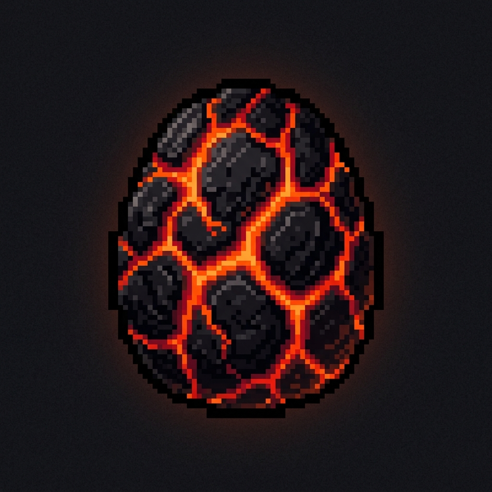
Casca de obsidiana com fendas de lava incandescente. Base para o modelo 3D e ícone de inventário.
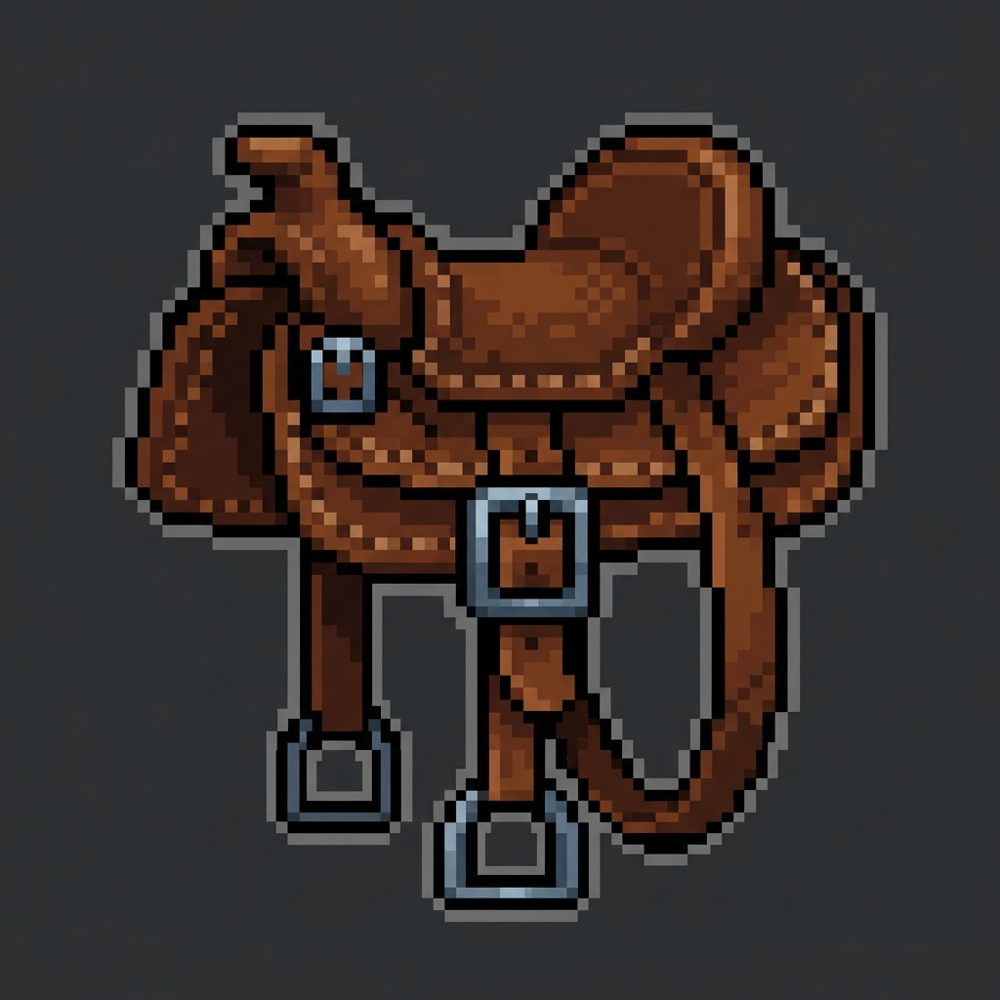
Couro dracônico curtido, costuras reforçadas e fivelas de ferro para montaria estável.
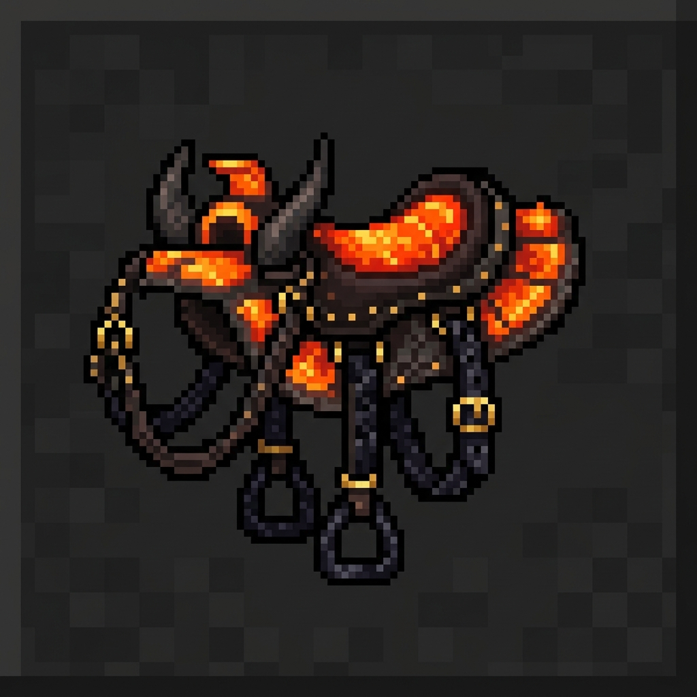
Estribos forjados em lingote de brasa e acabamento em placas vulcânicas para alta velocidade.
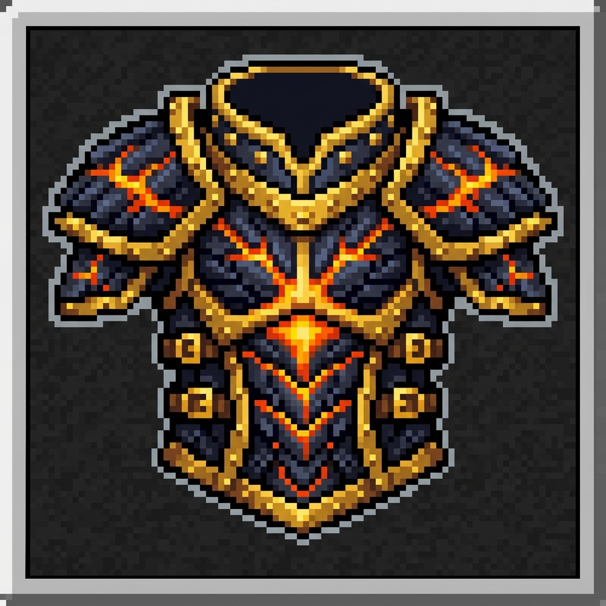
Barda dracônica peitoral de obsidiana com bordas douradas e veios de fogo vivo.
Todas as 22 novas texturas em alta resolução pixelada (RGBA sem artefatos), produzidas com silhuetas marcantes e paleta dracônica rústica.
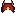
#59 flamefang_helmet
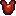
#60 chestplate
#61 leggings
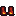
#62 boots
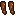
#63 handler_gloves
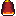
#64 riders_cloak
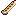
#65 dragon_horn
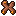
#66 reinforced_reins
#67 tail_flame_guard
#68 flight_map_case
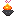
#69 beacon_fire
#70 chest_upgrade
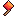
#71 crystal_candy
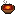
#72 infused_broth
#73 berry_tart
#74 honeycomb
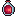
#75 vitality_essence
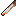
#76 shed_tooth
#77 ember_core
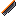
#78 bone_needle
#79 scale_plate
#80 ancient_relic
39 novas texturas 16x16 RGBA para a Forja Dracônica de Fusão, 10 minérios elementais com pedras personalizadas, formas brutas, lingotes puros e ligas especiais bipolares.
draconic_foundry_front
draconic_foundry_side
draconic_foundry_top
draconic_foundry_bottom
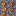
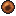
terraslate_ore / raw
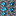
abyssal_tide_ore / raw
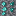
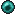
tempest_ore / raw
frostbite_ore / raw
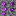
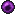
miasma_ore / raw
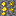
fulgurite_ore / raw
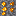
solarium_ore / raw
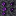
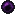
void_shadow_ore / raw
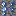
astralite_ore / raw
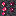
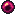
chronium_ore / raw
terraslate_ingot
abyssal_tide_ingot
tempest_ingot
frostbite_ingot
miasma_ingot
fulgurite_ingot
solarium_ingot
void_shadow_ingot
astralite_ingot
chronium_ingot
frostburn_alloy
plasma_alloy
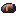
volcanic_titanium
scalding_alloy
shadowflame_alloy
Telas de contêiner autênticas desenhadas em 256x256 pixels com molduras temáticas (basalto, cinzas, couro e obsidiana), grade 9x3 de inventário, hotbar 9x1 e suporte a spritesheets animados.
Moldura de basalto escuro com rebites de bronze. 2 entradas para minérios, combustível inferior, indicador de fusão de magma e saída ampliada (26x26).
gui/container/draconic_foundry.png
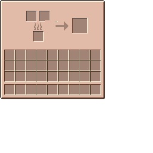
Pedra refratária de cinzas. 3 slots de cocção (carne, vegetal, cinzas/temperos), chama de calor ativa, seta culinária e saída de ensopados.
gui/container/draconic_hearth.png
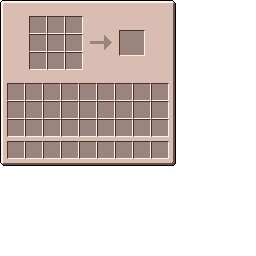
Couro conhaque nobre com pesponto artesanal duplo e cantoneiras de latão. 4 slots de alfaiataria (base, escamas, tendão, alforje) e saída de arreios.
gui/container/tack_workbench.png
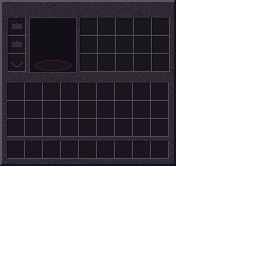
Slots com silhuetas de Sela, Armadura Barda e Cabresto. Viewport central para render 3D do Flamefang e grade de 15 slots de alforjes acoplados.
gui/container/dragon_inventory.png
Texturas de armadura humana 64x32 mapeadas no novo sistema de camadas de equipamento do Minecraft 26.3, além do lingote Frostburn sólido e eliminação de frestas no Braseiro de Incubação.
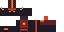
Mapeamento 64x32 para Elmo com chifres de dragão, Peitoral com placas sobrepostas de escamas de fogo e Botas reforçadas com garras no calcanhar.
entity/equipment/humanoid/flamefang.png
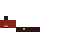
Mapeamento 64x32 para a cintura e pernas. Joelheiras reforçadas com lâminas de queratina e faixas de couro ignífugo articuladas.
entity/equipment/humanoid_leggings/flamefang.png
Redesenhado com 126 pixels 100% opacos sólidos (sem semitransparência que sumia no jogo). Borda de gelo ciano e núcleo incandescente vívido.
item/frostburn_alloy_ingot.png
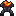
Linha de base (y=15) preenchida com ardósia sólida em incubation_brazier.png e side. Fresta transparente com o solo eliminada!
block/incubation_brazier.png
Definição das mecânicas de voo (Isle of Berk), quests térmicas de ovo, personalidade do Flamefang e Fornalhas personalizadas. Documentos: GDD.md, ITENS.md, IDEIAS.md.
Migração das pastas .minecraft, .tlauncher, .gradle e Mine para o Disco D: com mais de 1.500 GB livres, usando junções transparentes no Windows.
O teste no TLauncher baixou o OpenJDK 25 da Microsoft e o NeoForge 26.3.0.48-beta oficial direto para o seu computador. Nenhum instalador externo extra foi necessário!
Arquivo D:\Mine\mcp.js instalado com sucesso no Blockbench. O servidor local MCP está pronto para conectar a IA na modelagem 3D.
Template configurado com mod_id=wingsofthewild, conectado ao Microsoft OpenJDK 25 e apontado para a versão NeoForge 26.3.0.48-beta.
7 Itens e Blocos criados com texturas 16x16 pixel-art e modelos JSON. O arquivo wingsofthewild-1.0.0.jar foi gerado com sucesso!
O mod já foi copiado para D:\Minecraft\.minecraft\versions\Mod\mods. Você já pode abrir o jogo pelo TLauncher para ver os itens na mão!
Todas as 5 rodadas de desenvolvimento concluídas pelo Agente 1 com 80 itens e blocos funcionais, armaduras, culinária e ferramentas.
Adicionados Forja Dracônica, 10 Minérios em Bloco (Tier 1 a 10), 10 Minérios Brutos, 10 Lingotes Elementais, 5 Super Ligas Metálicas e 10 tiers de materiais em ModToolMaterials.java. Total de 116 itens e blocos compilados e prontos em wingsofthewild-1.0.0.jar no jogo!
Desenvolvidas as telas e menus de interface para a Forja de Ligas (DraconicFoundryScreen), Fornalha Culinária (DraconicHearthScreen) e Bancada de Selaria (TackWorkbenchScreen), com dados térmicos sincronizados e texturas 256x256 customizadas. Implementadas 65 receitas oficiais completas no formato Minecraft 26.3 cobrindo minérios elementais, super ligas, armaduras, ferramentas, selaria e estações de trabalho.
| # | ID Interno | Nome em Português | Categoria | Status |
|---|
Os modelos antigos foram removidos. Restam exclusivamente os 4 modelos oficiais com suporte nativo ao GeckoLib:
flamefang_adult_geckolib.bbmodel: Dragão Adulto Colossal Harmônico & Suíte de 10 Animações: 5.5 blocos de altura (88 unidades), 17.8 blocos de envergadura alar (284 unidades), 143 elementos anatômicos, 36 ossos, textura Ultra-HD 512x512 vulcânica sem xadrez. 10 Animações Blockbench & GeckoLib: idle (postura nobre), walk (passo quadrúpede), fly_flap (bater de asas fluido cinematográfico com empuxo e patas recolhidas), glide (planeio termal com asas abertas), eating (alimentação com 3 mordidas ritmadas e engolir), sleep (sono aninhado no ninho com respiração profunda de 6.0s), wake_up (despertar com bocejo de 62° e espreguiçada), roar (rugido com peitoral de 60 unidades e envergadura de 284 unidades), attack_bite (mordida de combate) e attack_fireball (baforada devastadora).flamefang_Juvenil_geckolib.bbmodel: Dragão Juvenil Atlético (Padrão Hexápode & Asas Amplas): 2.5 blocos de altura, 150 unidades de envergadura (~9.4 blocos). Anatomia Hexápode: 4 patas completas plantadas no solo (Y=0) com ombros musculosos e garras predadoras (eliminando braços suspensos de T-Rex), peito atlético com quilha peitoral desenvolvida, asas aerodinâmicas amplas estendidas para trás no plano horizontal com membranas carmesins ao longo dos flancos (Isle of Berk), cauda orgânica articulada de 4 segmentos com leque de magma de 20 unidades de largura (sem cubos toscos), e textura HD 256x256 de obsidiana e magma ativo sem xadrez. 74 elementos, 29 ossos, 8 animações GeckoLib sincronizadas (idle, walk, fly_flap fluido, glide, eating, sleep, wake_up, roar).flamefang_hatchling_geckolib.bbmodel: Filhote Chibi (Quadrúpede Fofo & Broto Orgânico de Fogo): 1.0 bloco de altura. Anatomia Quadrúpede Fofa: 4 patinhas firmemente apoiadas no solo (Y=0), barriguinha roliça e peito cheinho de bebê aquecido, asinhas aerodinâmicas proporcionais estendidas para trás, cauda orgânica com broto arredondado de fogo em pétalas/gota (eliminando cubos toscos), olhos grandes dourados com brilho e pupila viva, e textura 128x128 detalhada de filhote. 21 elementos, 14 ossos, 8 animações GeckoLib sincronizadas (idle, walk, fly_flap fofo, glide, eating, sleep, wake_up, roar).flamefang_egg_geckolib.bbmodel: Modelo 3D do Ovo de Magma com relevo de obsidiana e veios de lava (com animação de pulsação e balanço de pré-eclosão).Modeladas pelo Arquiteto 3D de Estações de Trabalho em formato Blockbench nativo (.bbmodel) com texturas base64 embutidas e exportadas em JSON para Minecraft com elementos geométricos cúbicos avançados, iluminação e mapeamento UV milimétrico:
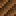
dragon_nest.bbmodel
28 Elementos 3D: Diâmetro externo expandido de 26x26 unidades, leito côncavo rebaixado forrado em palha chamuscada para aninhar o ovo de Flamefang, 8 pedras basálticas de ancoragem no solo e borda octogonal de galhos grossos e gravetos rústicos entrelaçados.
draconic_foundry.bbmodel
24 Elementos 3D: Cadinho refratário monumental no topo com bacia oca de retenção e poço de ligas em fusão, calha lateral saliente de vazamento de metal líquido, fornalha frontal com abertura em arco e brasas ardentes, sobre base escalonada de tijolos vulcânicos.
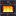
draconic_hearth.bbmodel
20 Elementos 3D: Compartimento inferior de cinzas com puxador, grelha com caldeirão volumétrico suspenso sobre leito de brasas ardentes, chaminé rústica posterior com 3 respiradouros para saída de vapor e cimalha chanfrada de proteção.
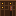
tack_workbench.bbmodel
22 Elementos 3D: Estrutura robusta de carvalho escuro com pernas chanfradas e prateleira inferior, esteira de couro cru esticado, gaveta de marcenaria fina com puxador de osso, suporte frontal com ferramentas de entalhe e carretel lateral com tendão dracônico.
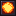
incubation_brazier.bbmodel
19 Elementos 3D: Pedestal e fuste central em ardósia esculpida, taça superior com bacia de magma eterno e núcleo de fogo concentrado até Y=17, envolto por 4 garras arqueadas de ferro forjado para direcionamento de calor radiante aos ninhos.
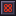
draconic_anvil.bbmodel
17 Elementos 3D: Base maciça de obsidiana e cintura afunilada com magma ativo, runas mágicas incandescentes entalhadas nas laterais, mesa de choque rúnica plana, talão traseiro escalonado e chifres duplos curvos de dragão salientes na parte frontal.
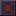
dragon_perch.bbmodel
ember_lantern.bbmodel
18 Elementos 3D: Base de metal chanfrada, 4 pilares de ferro nos cantos, 4 painéis de vidro translúcido, brasa ardendo no centro, cúpula de metal chanfrada em dois níveis e alça com argola de ferro forjado superior.
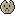
flamefang_trophy_skull.bbmodel
25 Elementos 3D: Cabeça dracônica volumétrica estilo mob head com focinho reptiliano saliente, órbitas oculares profundas, presas afiadas, crânio ósseo e par de chifres pontiagudos curvados para trás.
16 Elementos 3D: Mastro vertical resistente em madeira nobre com sapatas e cintas de reforço em ferro forjado, escoras diagonais e trave transversal chanfrada de 26 unidades com ranhuras de pouso para garras e ponteiras com olhais de amarração.
O arquivo do plugin já foi baixado e está salvo em: D:\Mine\mcp.js
D:\Blockbench\Blockbench.exe.Qualquer sugestão ou ideia adicional dada durante a versão 1.0 é guardada com carinho para as próximas atualizações: